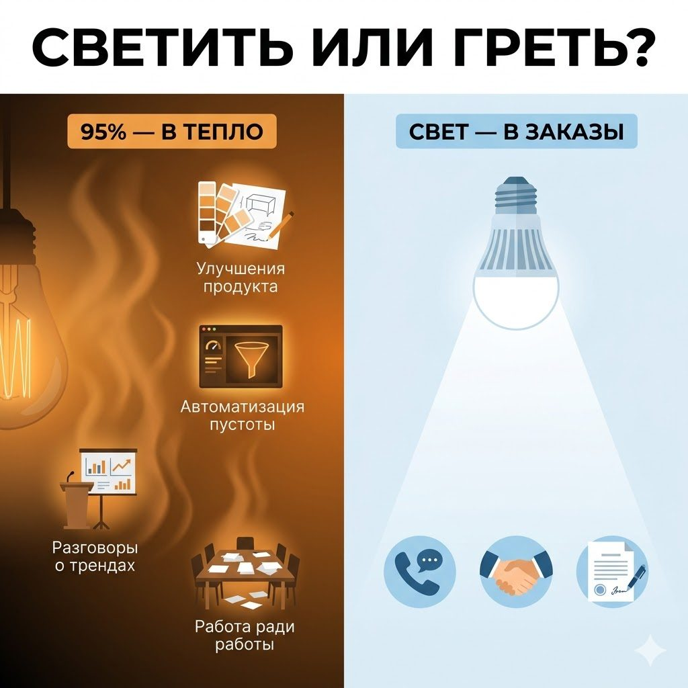

«Никто ещё не прочитал книгу при свете батареи отопления»
Мебельный рынок переживает не лучшие времена. Продажи у многих просели, трафик дорожает, маркетплейсы откусывают всё большую долю маржи, покупатель думает дольше и торгуется злее. И собственники всё чаще задают один и тот же вопрос: что ещё такого сделать, чтобы продажи выросли?
Вопрос звучит правильно, но в нём спрятана ловушка, и прячется она в слове «ещё». Прежде чем делать что-то ещё, полезно разобраться, куда уходит энергия от того, что вы уже делаете.
Лампочка накаливания и мебельный бизнес
Обычная лампа накаливания превращает в свет примерно пять процентов потребляемой энергии. Остальные девяносто пять уходят в тепло. Если называть вещи своими именами, лампа накаливания представляет собой обогреватель, который немного светит. Сто лет это никого не смущало, потому что альтернатив не было. Потом появились светодиоды, и внезапно выяснилось, что почти всю энергию можно направить в нужный результат.
В мебельном бизнесе сегодня происходит то же самое. Многие компании тратят огромное количество сил, времени, денег и внимания на деятельность, которая влияет на продажи лишь косвенно. То есть фактически производят тепло вместо света. Разница только в том, что у ламп переход занял сто лет, а у мебельщиков на него остался примерно сезон.

Симптомов у этой болезни четыре, и все они хорошо узнаваемы.
Симптом первый. Бесконечные улучшения продукта
Любимый диагноз производителей: надо улучшить коллекцию, добавить новые декоры, изменить конструкцию, обновить упаковку и нарисовать ещё двадцать моделей. Всё это полезно. Иногда.
Но представьте картину, которую я наблюдаю с пугающей регулярностью. Загрузка производства пятьдесят процентов. Отдел продаж не может назвать десять новых клиентов, с которыми общался на прошлой неделе. Зато конструкторы третий месяц дорабатывают новую линейку шкафов, и совещание по оттенкам дуба собирает полный кабинет, тогда как планёрка по продажам идёт по остаточному принципу, между обедом и «ну, у всех всё по плану?».
Это и есть лампочка накаливания. Новая линейка, возможно, добавит немного продаж, те самые пять процентов. Но главная проблема была не в ассортименте, а в отсутствии покупателей, и девяносто пять процентов энергии ушли в тепло. Продукт улучшать приятно: это понятная, любимая, уютная работа, в которой нет отказов, возражений и неловких разговоров. Именно поэтому она так хорошо греет. Про эту же ловушку, только с другой стороны, в этой брошюре есть отдельная глава — про то, что в кризис продукт чаще нужно не «лучше», а проще: бесконечное усложнение ассортимента греет конструкторов, но не наполняет салон покупателями.
Симптом второй. Автоматизация пустоты
Второй популярный способ обогрева. Компания решает: нам нужна новая CRM, нормальный ERP, система отчётности, нейросети и заодно новый сайт. Всё это замечательно, но есть неудобный вопрос: а что именно вы собираетесь автоматизировать?
Потому что хаос, автоматизированный при помощи дорогой системы, остаётся хаосом. Только теперь лицензия оплачена на год вперёд. Если у вас нет воронки продаж, новая CRM её не создаст. Если менеджеры не звонят клиентам, новая телефония не заставит их звонить. Если вы не умеете выстраивать отношения с дизайнерами интерьера, никакой искусственный интеллект не приведёт вам дизайнеров.
Автоматизация очень часто становится респектабельным способом не заниматься реальной проблемой. Бюджет осваивается, ощущение прогресса присутствует, в отчёте для самого себя появляется строчка «цифровая трансформация». Тепло идёт, света нет. В полной мере это касается и модной темы искусственного интеллекта: в этой брошюре ему посвящена отдельная глава — про то, что ИИ это усилитель, а не волшебная палочка. Он ровно так же не наведёт порядок там, где порядка нет, а лишь быстрее и аккуратнее размажет хаос по красивым дашбордам.
Симптом третий. Стратегические разговоры вместо клиентских
Есть собственники, которые знают всё про мировые тренды: про ИИ, омниканальность, цифровую трансформацию, поколение Z и экономику внимания. При этом они не могут ответить на три простых вопроса: почему клиент вчера не купил, почему дилер ушёл месяц назад и почему дизайнер выбрал конкурента.
Удивительная вещь: человек способен часами рассуждать о будущем отрасли и при этом полгода не разговаривать напрямую с покупателями. В кризис это особенно опасно, потому что рынок меняется быстрее любых презентаций, а ответы находятся не на конференциях, а в разговорах с реальными клиентами.
Причём такой разговор стоит ровно ноль рублей. Возьмите телефон, позвоните пятерым клиентам, которым сдали мебель полгода назад, и спросите, всё ли работает и порекомендовали бы они вас знакомым. За час вы узнаете о своём бизнесе больше, чем за два отраслевых форума. А заодно, если у вас всё в порядке, получите пару тёплых обращений: довольный клиент, которому вовремя позвонили, удивительно охотно вспоминает, что подруге как раз нужен шкаф. Рекомендации вообще самый дешёвый свет в этой отрасли, просто большинство компаний ждёт, что он включится сам. Как превратить этот случайный свет в управляемый поток, в этой брошюре разобрано отдельно — в главе про то, что сарафан придётся превращать из погоды в процесс.
Симптом четвёртый. Работа ради работы
Самый распространённый вариант. Все заняты, все бегают, все сидят на совещаниях, пишут отчёты и что-то согласовывают. Но стоит задать простой вопрос, что из этого напрямую влияет на получение заказа, и возникает неловкая пауза. Большая часть деятельности существует сама для себя, как тепло от лампы: его много, оно ощущается, но осветить комнату оно не помогает.
Почему кризис всё обострил
В хорошие времена эта проблема почти незаметна. Когда рынок растёт, даже неэффективные действия дают результат: можно тратить девяносто пять процентов энергии впустую и всё равно показывать рост, рынок вытянет. Собственно, многие так и росли, искренне считая это заслугой системы, а не прилива.
Когда рынок падает, прилив уходит, и каждый рубль, каждый час, каждый сотрудник и каждое управленческое решение начинают проходить проверку на КПД. И вдруг оказывается, что огромная часть деятельности создавала только ощущение движения, а не результат.
Светодиодный режим: тест на длину цепочки
Инструмент здесь один, и он умещается в вопрос: если убрать красивые объяснения, как именно это действие приведёт к деньгам? Задайте его и посчитайте количество шагов в честном ответе.
Новая коллекция приведёт к заказам через узнаваемость, которая улучшит восприятие бренда, которое со временем повысит лояльность, которая когда-нибудь конвертируется в продажи. Если цепочка получилась длиннее дороги из Санкт-Петербурга во Владивосток, перед вами очередная лампочка накаливания.
А теперь сравните. Звонок прошлому клиенту: звонок, замер, договор. Встреча с дизайнером интерьера: встреча, его объект, ваш заказ. Повышение конверсии замера в договор. Сокращение сроков производства. Снижение возвратов и переделок. Просьба о рекомендации, сказанная в правильный момент правильными словами. Здесь связь прямая, шагов один-два, энергия превращается в результат без посредников. Это и есть светодиод.
Главный вопрос собственнику
Я не призываю отказаться от разработки продукта, автоматизации или стратегии. Без них нельзя, и в спокойные времена именно они создают отрыв от конкурентов. Но сегодня многим мебельным компаниям полезно провести простой аудит.
Выпишите на один лист все активные проекты, инициативы и регулярные совещания. Напротив каждого пункта напишите одним предложением, как именно он приводит к деньгам. Если предложение начинается со слов «это повысит узнаваемость, что улучшит восприятие, что в перспективе...», можете не дописывать: вы смотрите на обогреватель. Дальше остаётся честно разложить список на две стопки: «это действительно даёт свет» и «это просто хорошо греет воздух».
Потому что в нынешнем кризисе выигрывают не те, кто больше работает, и даже не те, кто больше экономит. Выигрывают те, кто умеет направлять максимум энергии в нужный результат. Этот сдвиг с «больше» на «иначе» в брошюре разобран отдельно — в главе про то, что в кризис надо не больше работать, а быстрее учиться.
Иначе на выходе можно получить очень тёплый офис, очень красивую CRM, очень современный сайт, очень умные презентации и очень пустое производство. А это уже не лампочка. Это дорогостоящий обогреватель под видом бизнеса.